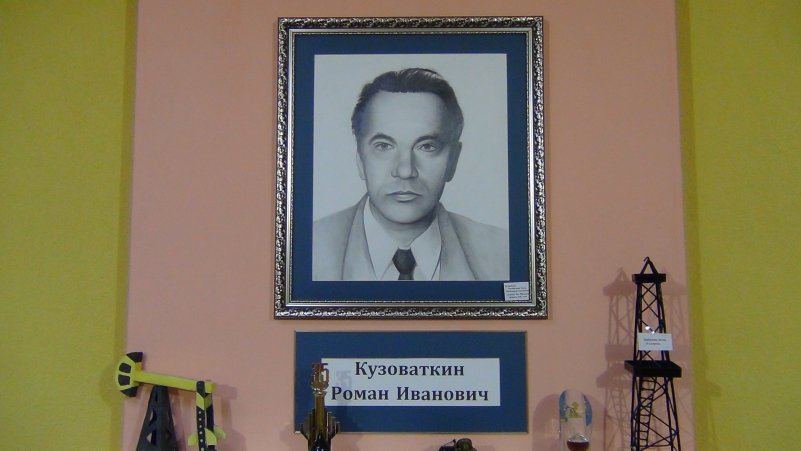
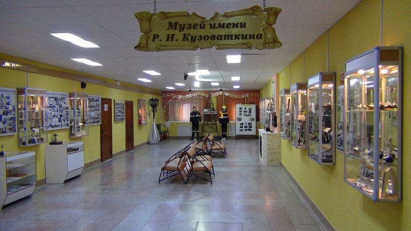
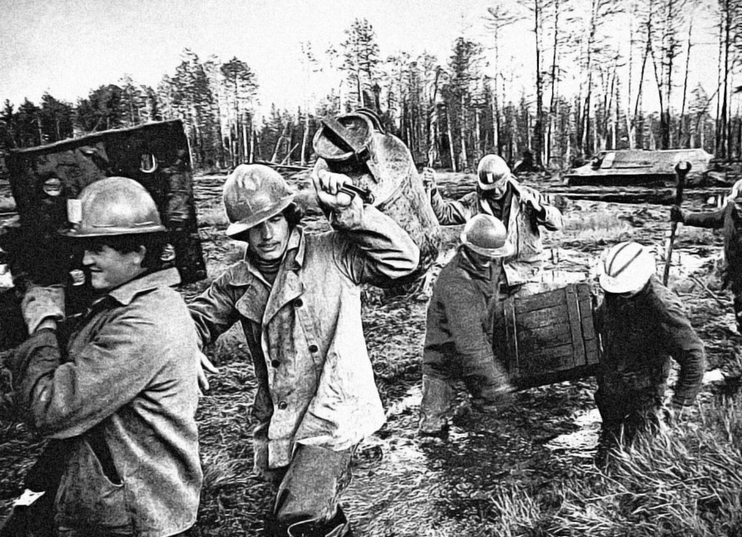
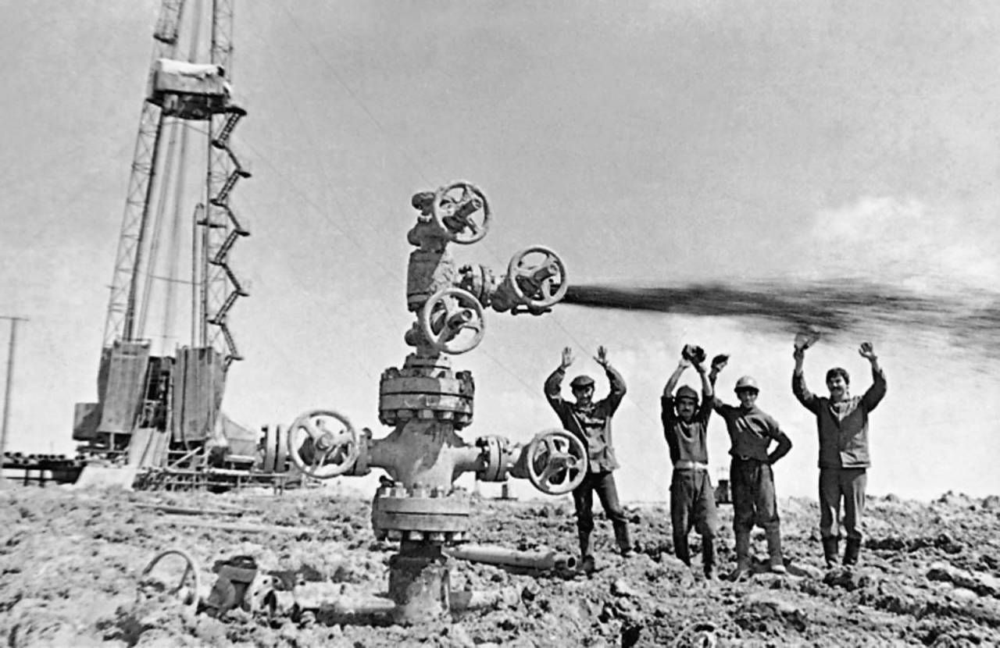
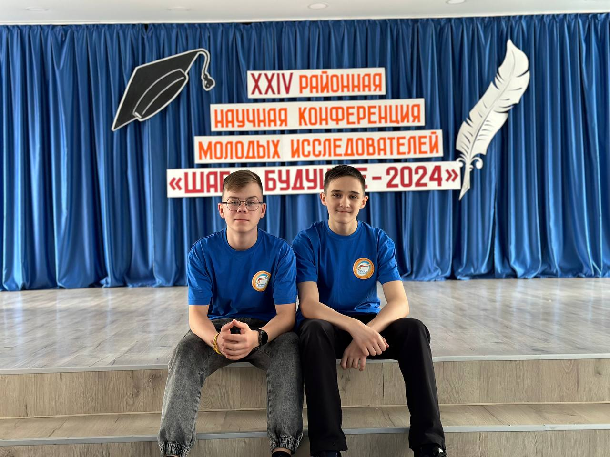

Добро пожаловать в виртуальный учебный комплекс!
Наш проект направлен на создание виртуального тренажёра в музее нефти имени Романа Ивановича Кузоваткина, который поможет учащимся изучить нефтегазовую индустрию и определиться с будущей профессией.

История музея
Музей нефти имени Романа Ивановича Кузоваткина был создан на третьем этаже школы №1 пгт. Пойковский. В музее представлены экспозиции, посвященные истории нефти, истории НГДУ «Правдинскнефть» и быту нефтяников 1970-90-х годов.

История нефти
Нефть известна человечеству с древних времён. Первые упоминания о её использовании относятся к 6500 году до нашей эры. Нефть формируется из остатков древних организмов, подвергшихся давлению и температуре в течение миллионов лет.
Правдинское месторождение. 1 декабря 1964 года скважина № Р-51 дала фонтан нефти, что изменило судьбу региона и принесло процветание. Салымское месторождение, где в 1965 году первая скважина также дала нефть, несмотря на трудности первопроходцев. Наконец, Нефтеюганский район, где в 1961 году скважина Р-62 открыла новое время, а в 1977 году был создан 'Юганскнефтегаз', который под руководством Романа Ивановича Кузоваткина разработал 28 месторождений.


О проекте
Проект разработан учениками Пестриковым Кириллом, Морозовым Антоном под руководством наставника Рахманова Александра Валерьевича.
Используется отечественная платформа VARWIN для создания интерактивных сценариев и виртуальных сред обучения.
